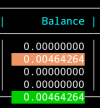

Earn Noso using only a mobile device
To earn Noso through PoPW on your Android device, you will first need to download and install a wallet.
Step 1
Download and install the latest version of NosoMobile wallet from Github.com (here).

Upon installation, wallet will generate a default address that you will need to copy/paste in a later step.
Step 2
Install the Termux App from FDroid app store (here) NOT from Google Playstore! Once FDroid is installed, open FDroid and Install Termux.
Step 3
Launch Termux App and perform the following:
- Update Termux:
pkg update
- Upgrade Termux:
pkg upgrade
- Install Proot Distro:
pkg install proot-distro
- Install Debian:
proot-distro install debian
- Login to Debian:
proot-distro login debian
- Now that you are logged into Proot-Distro Debian, Update, upgrade and install wget and nano:
apt-get update -y && apt-get upgrade -y && apt-get install wget -y && apt-get install nano -y
- Download "Get Noso" app (version 1.3) wget:
wget https://cdn.discordapp.com/attachments/926134526344843366/1043832815105613944/consominer2-v1.3-aarch64
- Make "Get Noso" app executable:
chmod +x consominer2-v1.3-aarch64
Run "Get Noso" app from within Termux/proot-Distro/Debian:
./consominer2-v1.3-aarch64
The inital run creates files needed for further configuration.
Step 5
Close "Get Noso" app with the key combination
alt+X
Once closed, you will need to edit the consominer2.cfg configuration file:
nano consominer2.cfg
Update, copy/paste your wallet address into configuration, set your CPU, and test to "false"
SEE IMAGE BELOW:
 >
>
Close and save your changes using the key combination
CTRL+X and when prompted type Y to save changes.
With configurations in place, you are now ready to start earning coins.
Please note, a typical earning period consists of 48 blocks from the moment you start participating. It takes 7 1/2 hours to go through 48 blocks and you will not see coins in your wallet until after the 7 1/2 hours has lapsed. When participating, you will see a "balance" column with coins pending in green. This is the balance of coins you will receive when your participation period has expired.
